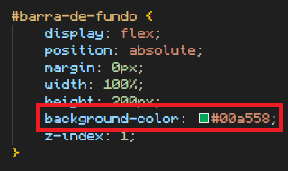
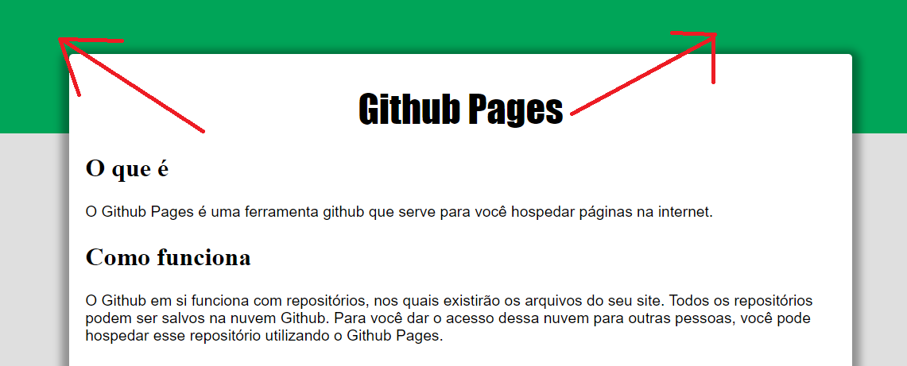
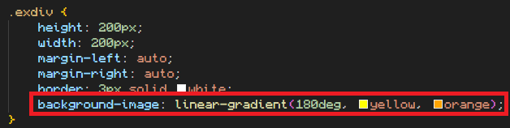
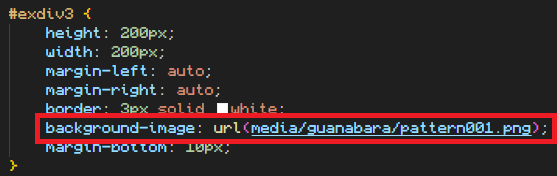
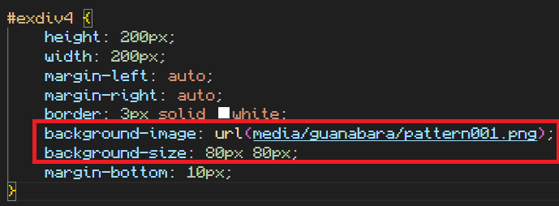
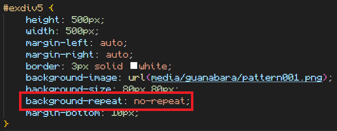
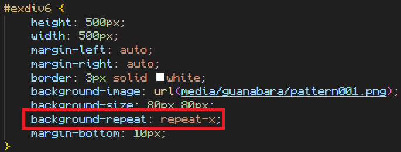
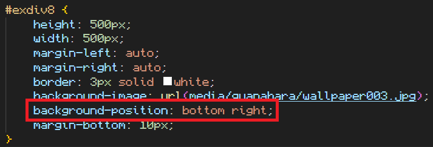

Imagens de fundo
Estilo background-color
Existe um estilo que possibilita a configuração do fundo de um elemento HTML. Esse estilo é o background-color.
Esse estilo permite que você escolha uma cor sólida para ser o fundo de um elemento HTML.
Ex:
Resultando em:
Estilo background-image
Esse outro estilo, background-image, permite que você faça uma série de configurações adicionando outros tipos de fundos no seu elemento.
Por exemplo, você pode colocar o valor de background-image, como linear gradient, para construir um degradê.
Ex:
O shorthand recebendo: ângulo, cor, cor, cor, cor, (quantas cores quiser).
Resultando em:
Você pode colocar uma imagem se quiser, basta colocar dentro do background-image, o valor url(/caminho).
Ex:
Resultando em:
Background-size
Para configurar o tamanho da imagem de fundo, usa-se o estilo background-size, que recebe dois valores de tamanho separados por espaço, sem vírgula.
Ex:
Resultando em:
Background-repeat
Você pode configurar a quantidade de repetições de imagem de fundo com o estilo background-repeat.
Ex:
Resultando em:
Pode-se configurar também o eixo de repetição, ex:
Resultando em:
Background-position
A configuração padrão do background, é de ser alinhado com o topo esquerdo de sua imagem.
Ex:
Essa configuração pode ser modificada com o estilo background-position, que recebe os valores de alinhamento em coluna, e depois em linha, separados por espaço.
Ex:
Resultando em:
Background-size avançado
Sempre coloque uma cor de fundo em seu site, mesmo que utilize uma imagem de fundo. Pois o site carrega primeiro as configurações CSS e depois as imagens.
background-sze: contain; Esse estilo faz com que a imagem fique sempre 100% exibida, sem cortes ou distorções, porém podem existir bordas sem preenchimento devido ao formato da janela.
Ex:
background-size: cover; Nesse estilo, a imagem se adaptará para ocupar todo o espaço, usando cortes e redimensionando, mas sem distorção. É uma configuração muito recomendada!